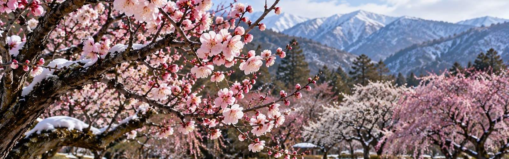
2月當令的食材
2月當令的食材共75項。海鮮45項、蔬菜23項、水果7項。
海鮮45項
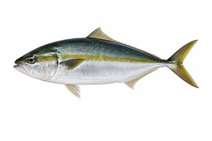
鰤魚（青甘）12月〜2月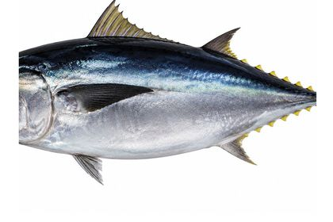
黑鮪魚11月〜2月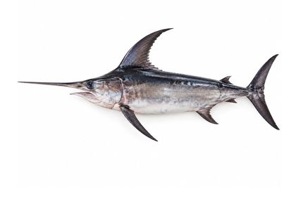
旗魚11月〜2月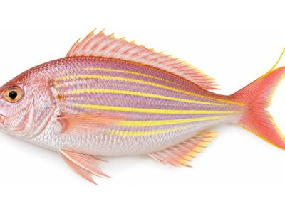
金線魚（絲背鯛）11月〜2月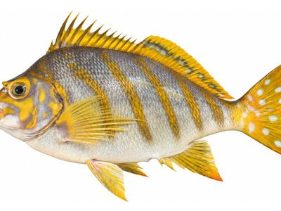
斑馬唇指䱵（鷹羽鯛）11月〜2月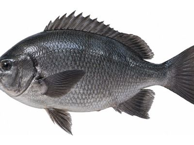
瓜子鱲（目仁奈）11月〜2月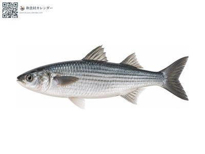
烏魚（鯔）11月〜2月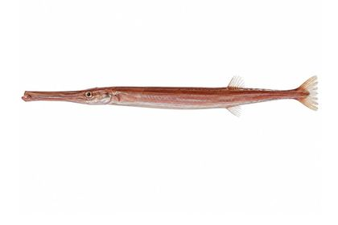
紅馬鞭魚（矢柄）11月〜2月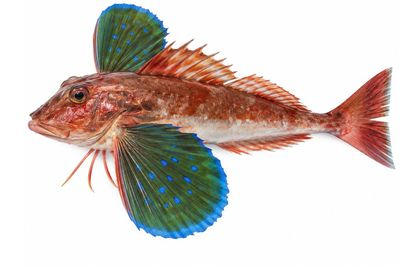
綠鰭魚（魴鮄）11月〜2月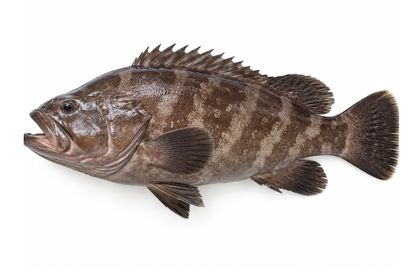
長牙石斑（九繪）11月〜2月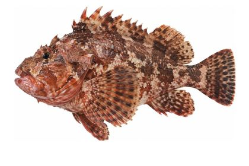
石狗公（笠子）11月〜3月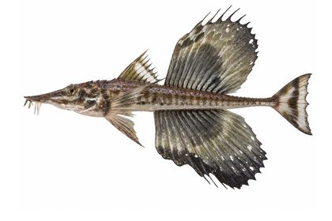
八角魚（特鰭）11月〜2月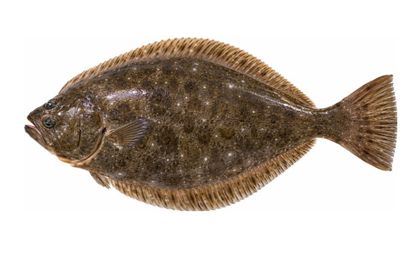
比目魚（平目）11月〜2月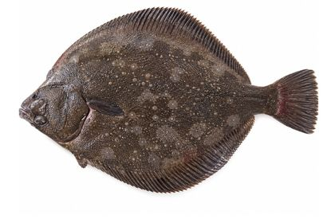
鯊皮鰈11月〜2月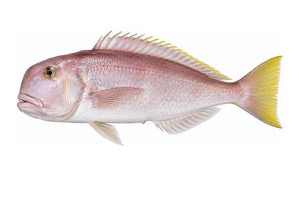
甘鯛（馬頭魚）11月〜2月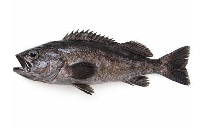
黑喉（黑鯥）11月〜2月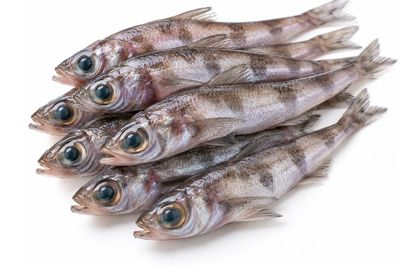
青眼魚（目光）11月〜2月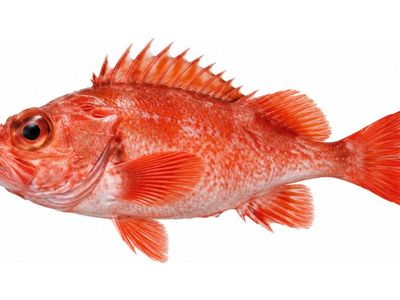
喜知次（大目鮶鮋）12月〜2月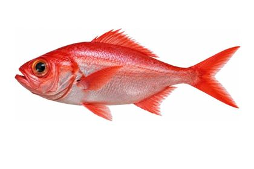
金目鯛12月〜2月 鰰（叉牙魚）11月〜2月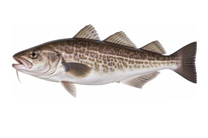
真鱈12月〜2月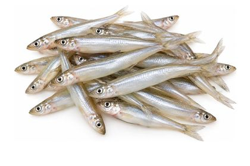
公魚（西太公魚）11月〜2月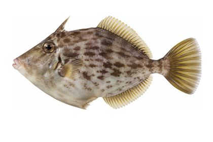
剝皮魚10月〜2月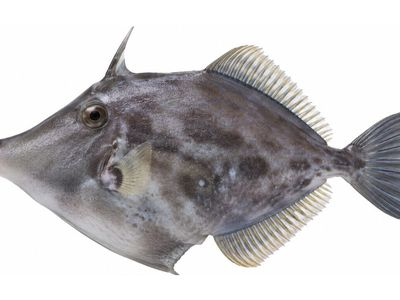
馬面剝皮魚10月〜2月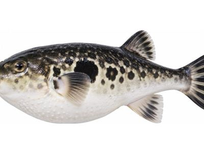
虎河豚11月〜2月 鮟鱇魚12月〜2月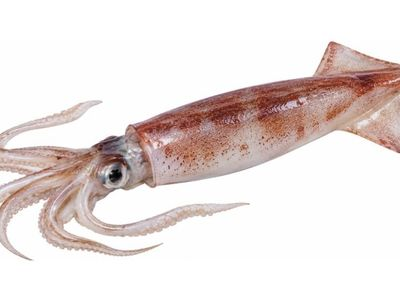
劍尖槍烏賊12月〜3月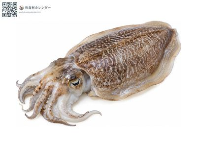
虎斑烏賊（紋甲）11月〜2月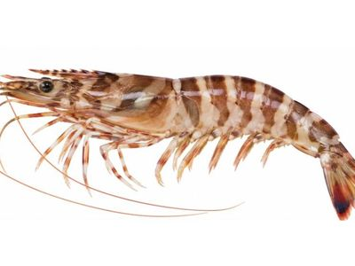
斑節蝦（車蝦）11月〜2月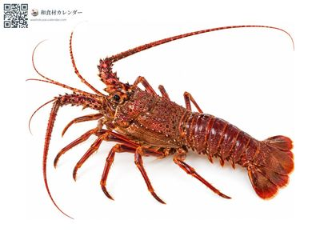
日本龍蝦（伊勢蝦）11月〜2月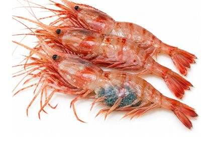
牡丹蝦11月〜2月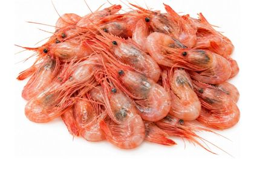
甜蝦（北國赤蝦）11月〜2月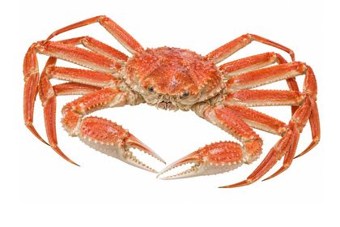
松葉蟹（楚蟹）11月〜3月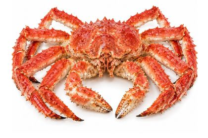
鱈場蟹（帝王蟹）11月〜2月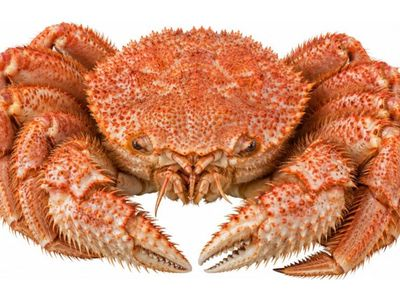
毛蟹12月〜3月 真牡蠣11月〜2月
真牡蠣11月〜2月
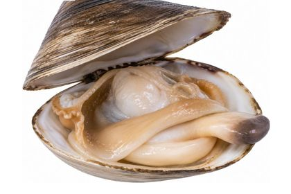
北寄貝（姥貝）12月〜3月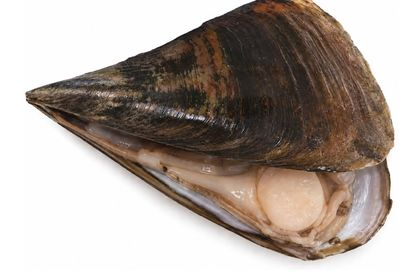
櫛江珧（平貝）12月〜3月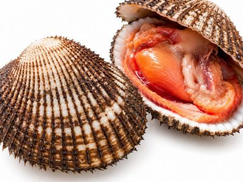
赤貝（魁蛤）11月〜2月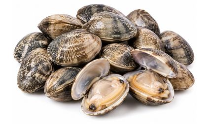
蛤蜊（淺蜊）2月〜4月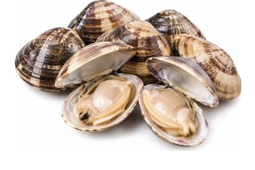
文蛤2月〜4月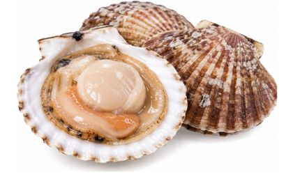
扇貝（帆立）12月〜3月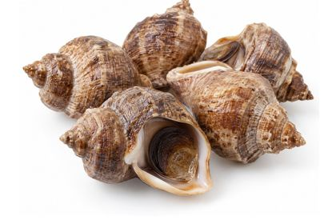
螺貝（つぶ貝）11月〜2月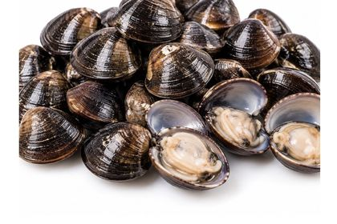
蜆1月〜2月、8月〜9月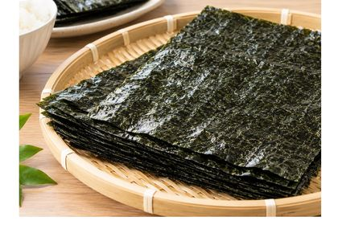
海苔12月〜2月蔬菜23項
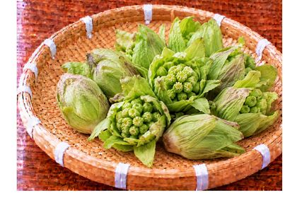
蜂斗菜花苞2月〜3月 油菜花2月〜3月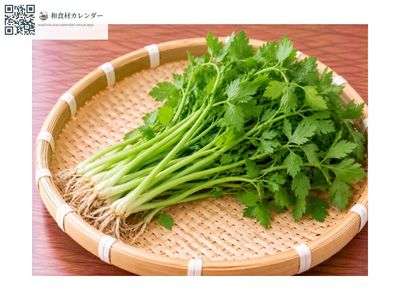
水芹1月〜3月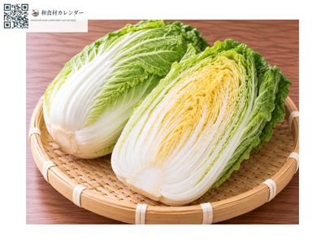
大白菜11月〜2月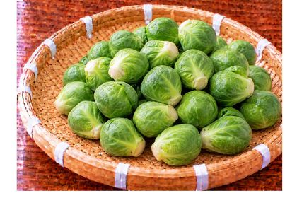
抱子甘藍11月〜2月 青花菜11月〜2月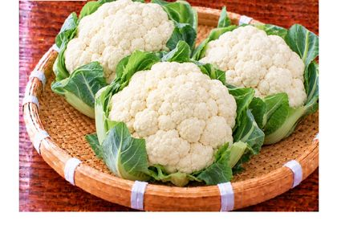
花椰菜（白）11月〜2月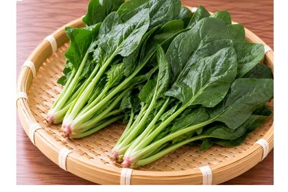
菠菜11月〜2月 小松菜12月〜2月 茼蒿11月〜2月 芥菜2月〜4月 西洋芹11月〜4月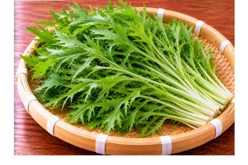
水菜（京菜）11月〜2月 日本大蔥11月〜2月 山葵（芥末）11月〜2月 水果番茄12月〜5月 白蘿蔔11月〜2月 蕪菁10月〜2月 蓮藕10月〜2月 番薯（甘藷）10月〜2月 蝦芋11月〜2月 日本山藥10月〜2月 百合根11月〜2月本月也有供應的食材
- 竹筴魚
- 條紋鰺（島鰺）
- 鯡魚
- 針魚（鱵）
- 白魚（銀魚）
- 鯖魚
- 紅甘鰺（間八）
- 黃鰭鮪
- 真鯛
- 黃鯛（連子鯛）
- 條石鯛
- 斑石鯛
- 日本真鱸
- 七帶石斑（真羽太）
- 赤點石斑（雉羽太）
- 日本平鮋（目張）
- 喉黑（赤鯥）
- 馬加鰆
- 日本鰻
- 真章魚
- 裙帶菜
- 獨活
- 野蒜
- 明日葉
- 高麗菜
- 結球萵苣
- 青江菜
- 芝麻菜（火箭菜）
- 鴨兒芹（三葉）
- 韭菜
- 蔥芽
- 紫蘇
- 紫蘇花穗
- 紫蘇穗（結籽）
- 山椒嫩芽（木之芽）
- 紅蓼嫩芽
- 蘿蔔嬰
- 防風（紅軸）
- 食用小菊
- 食用金魚草
- 食用迷你玫瑰（Bell Rose）
- 石松（裝飾用）
- 南天竹葉（裝飾用）
- 生薑
- 大蒜
- 番茄
- 小番茄
- 豆芽菜
- 珍珠洋蔥
- 胡蘿蔔
- 牛蒡
- 馬鈴薯
- 香菇
- 鴻喜菇（占地）
- 滑菇
- 金針菇
- 杏鮑菇
- 舞菇（灰樹花）
- 木耳
- 西洋梨
- 蘋果
- 蜜柑（溫州橘）
- 不知火柑（凸頂柑）